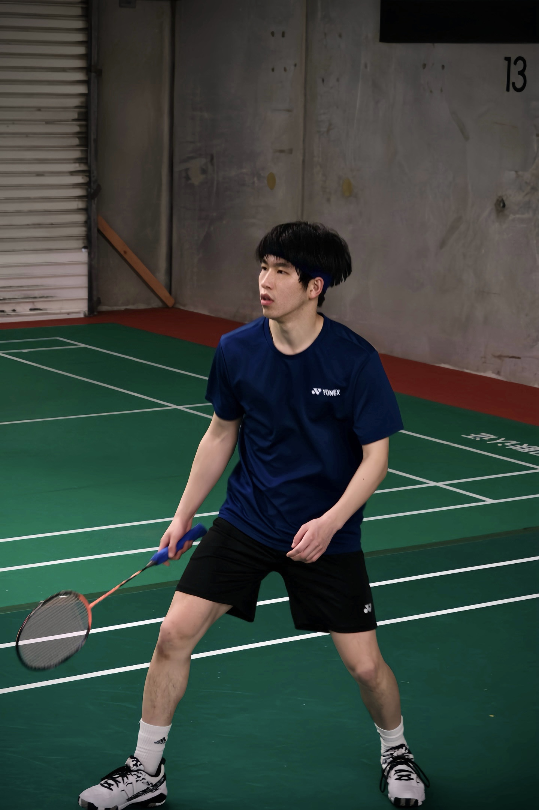

Yuan Tsai
Hiya, welcome to my page! I’m currently a penultimate-year Mechatronics Engineering student at the University of Auckland, graduating at the end of 2027!
My study choice in Mechatronics is driven by my knack for puzzles as well as having worn a revolutionary medical device - the cochlear implant, since the age of 3. This drives my natural passion to investigate the multi-disciplinary design of such devices, so that one day, I can work on similar devices to give the same kind of lasting impacts back to the community in a sustainable manner.
Check out the projects tab for info on what I’ve worked on and learnt, from community projects, to personal projects and coursework projects.
I love to confront challenges and unfamiliar grounds, where I have continuously taken up daunting and unfamiliar roles throughout my part-time jobs and university club exec co-curriculars, including being the current president of the University of Auckland Badminton Club! More on those in my co-curriculars tab!
Outside of the classroom, I’m an avid badminton player having played the sport since I was 8 years old, currently competing in competitive Division 3 for North Harbour. I also love to go for outdoor ~5-10km runs especially alongside Mission Bay, play board games with friends and travel.
